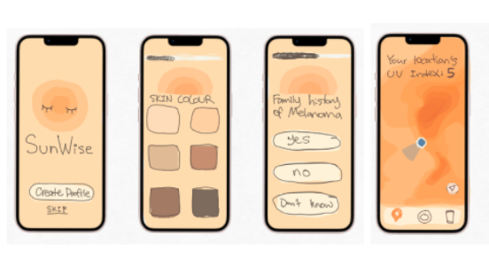

SunWise: Personalized UV Protection
Full-Stack Mobile Development
Project Overview
SunWise is a UV protection and skin health application designed to facilitate informed sun exposure decisions. It targets individuals with UV-related skin concerns or relevant family medical histories by integrating real-time UV index data with 8-day and hourly forecasts.
The platform promotes long-term skin health through personalized safety advice and recommendations for chemical-free sunscreens.
Development Process
Development began by translating UV safety requirements into functional user flows. Initial wireframes prioritized a data-driven onboarding experience to collect health metrics within a clear visual hierarchy.

Wireframe phase: Mapping user onboarding, skin-type assessment logic, and live geolocation tracking.
The core application logic utilizes a questionnaire evaluating skin tone and medical history to generate a sun sensitivity score. This score dynamically updates the user profile to adjust UI components and safety recommendations based on calculated risk levels.
The technical implementation leverages the React Native ecosystem and Expo for cross-platform stability. Geolocation features integrate the Google Maps API for precise user positioning, while the OpenWeather API provides localized UV index data.
Final Implementation: Integrated Firebase authentication, personalized risk assessment, and dynamic data visualization.
Key Features & Solutions
- Personalized Risk Assessment: Custom questionnaire generating sensitivity scores to drive tailored protection advice.
- Dynamic UI Feedback: Real-time updates to interface color schemes and weather iconography based on current UV risk and atmospheric conditions.
- Geospatial Integration: Synchronized UV index tracking with Google Maps interface for location-specific safety searches.
- Firebase Authentication: Secure user lifecycle management with persistent data storage for skin health profiles.
Challenges & Solutions
Data Accuracy and Complexity: Initial plans for a UV Heat Map were reconsidered due to limitations in regional UV data granularity. The project pivoted to a location-specific model to ensure 100% reliable data over interpolated regional estimates.
Development Environment: Resolving connectivity issues between local development servers and physical hardware required implementing network tunneling and consistent environment variable management in the collaborative workflow.
Outcome
SunWise successfully transitioned from conceptual sketches to a functional mobile application. The final product interprets weather data through a personal safety lens, utilizing asynchronous functions and API integrations to improve user confidence in sun exposure management.